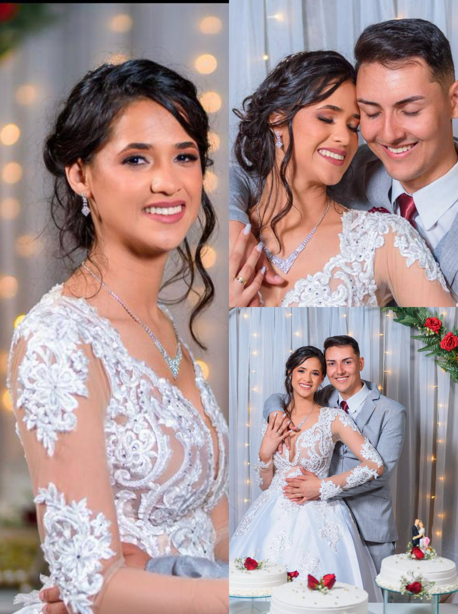

Orçamento para noivas
Pacote Clássico - R$ 390,00
- Assessoria via WhatsApp
- Maquiagem para noiva (com ou sem cílios)
- Penteado com arranjo
- Ajuda para vestir o vestido
- Lanche (suco de frutas + sanduíche natural)
- Roupão para a noiva usar no local
* Para garantir sua reserva, solicitamos um pagamento antecipado de 50% do valor do pacote escolhido no momento da marcação. O restante pode ser pago no dia da maquiagem.
* Por favor, compareça ao local com o cabelo devidamente escovado ou finalizado.
Endereço
Rua Travessa Flamengo, 378
Bairro Amaralina
Bom Jesus da Lapa/BA
Ref: Na Rua de Juarez comunicações, perto do Salão do Reino das Testemunhas de Jeová.